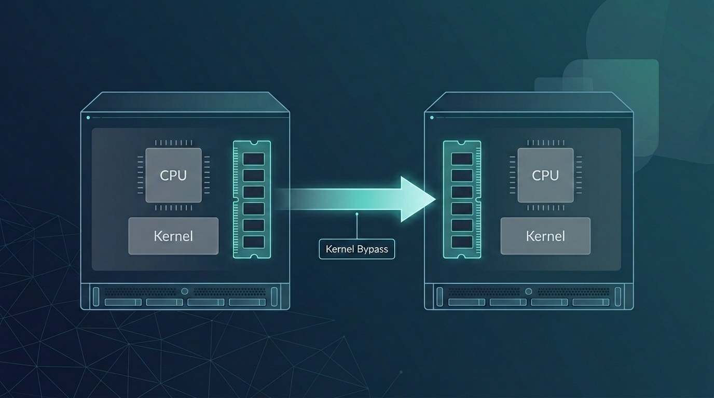
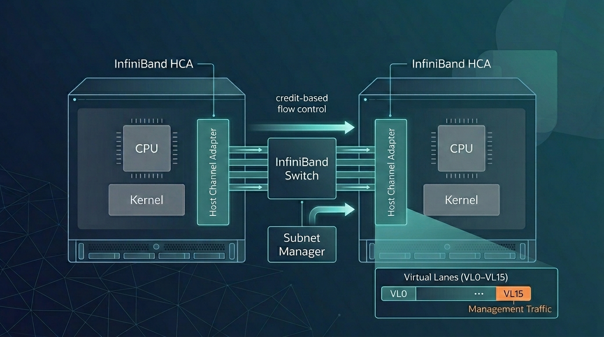
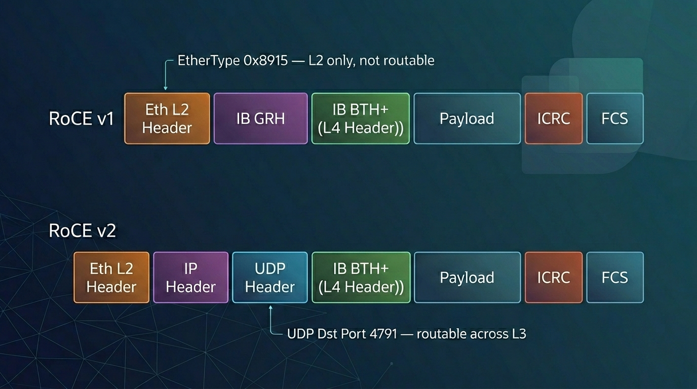

Remote Direct Memory Access: The Architecture of InfiniBand and RoCE
~2,100 words · about 10 min read
Disclaimer: This post reflects my personal views and learning notes as I worked through the material.
Acknowledgement: The draft was put together with research assistance from AI tools, but I curated the content, edited the prose, and cross-checked the references. The images were generated with Nano Banana.
From a 1993 Patent to the Two Fabrics That Carry RDMA Today

Remote Direct Memory Access (RDMA) was first codified in a patent filed by a team of Hewlett-Packard engineers in November 1993 [1]. The concept extends Direct Memory Access (DMA), the long-standing technique by which peripherals such as network cards transfer data to and from host memory without CPU involvement, across the network, letting one host read or write another host's memory while bypassing both CPUs and operating-system kernels [2]. Over the following three decades, RDMA became foundational to High-Performance Computing (HPC), large-scale AI model training, and financial-trading infrastructures.
Two fabrics carry the bulk of RDMA traffic today: InfiniBand and RDMA over Converged Ethernet (RoCE). Both expose identical RDMA semantics to applications but differ substantially in the underlying protocol stack, the mechanism that guarantees a lossless transport, and the hardware and management infrastructure they require [3]. The sections below trace each fabric's origin, its working fundamentals, and how the two compare on performance, cost, and deployment.
How RDMA Works
The baseline to compare against is a conventional TCP/IP transfer. Data is copied from the application's user-space buffer into a kernel socket buffer, encapsulated with TCP and IP headers, copied again into a network interface card (NIC) buffer, and transmitted on the wire. The receiver reverses the process. Every copy consumes CPU cycles, and every transition between user space and kernel space adds latency [4].
RDMA removes both sources of overhead using two complementary techniques. The first is kernel bypass: the NIC's control and data rings are mapped into user-space memory, so applications post work requests directly through the Verbs API (a low-level, vendor-neutral interface for RDMA operations) without invoking a kernel system call. The second is NIC offload: the transport-layer logic, including reliability, flow control, packet ordering, and segmentation, runs in silicon on the NIC rather than on the host CPU. The combination delivers zero-copy transfer from one process's memory to another's with near-zero CPU involvement [2].
Three hardware implementations share this Verbs API but differ at the physical and link layers: InfiniBand, RoCE (v1 and v2), and iWARP (Internet Wide Area RDMA Protocol), which runs RDMA over TCP/IP [4]. InfiniBand and RoCE dominate current deployments; iWARP is rarely used in new builds, primarily because TCP's software-style flow control adds latency that the other two fabrics avoid.
InfiniBand: A Purpose-Built RDMA Fabric
InfiniBand is the older of the two mainstream fabrics. The InfiniBand Trade Association (IBTA) was founded in 1999 to define an open standard for high-speed, low-latency networking for HPC and enterprise I/O [5]. Mellanox Technologies, later acquired by NVIDIA, led the early hardware development and drove RDMA's integration into mainstream computing [1].

Because InfiniBand was designed from a blank sheet for RDMA, its protocol stack (Physical, Link, Network, Transport, and Upper Layers) places losslessness, flow control, and addressing in the hardware contract rather than in operator configuration [6].
Link-layer flow control. InfiniBand uses credit-based flow control on a per-virtual-lane basis (a virtual lane, or VL, is one of up to 16 independent logical channels multiplexed over a single physical link). A receiving port advertises available buffer credits to the sending device, and data is transmitted only when the receiver has enough credits to accept it; dedicated link packets manage the credit exchange [6]. The effect is a link that cannot overrun its receiver and therefore cannot drop packets due to congestion, without any operator-side tuning.
Subnet management. A Subnet Manager, a centralized software component that runs on a switch or a dedicated host, handles device discovery, Local Identifier (LID) assignment, Service-Level-to-Virtual-Lane mapping, and link bring-up and teardown. Management traffic flows on queue pair QP0 over virtual lane VL15, a high-priority lane reserved exclusively for subnet management datagrams so control traffic is never starved by data traffic. Each subnet must have at least one active Subnet Manager; standby managers hold a synchronized copy of forwarding state for failover [6]. In production deployments the function is commonly provided by NVIDIA's Unified Fabric Manager (UFM) or the open-source OpenSM [3].
Addressing. Packets staying within a subnet carry a 16-bit Local Identifier. Packets crossing subnets additionally carry a 128-bit Global Identifier (GID) in the Global Route Header (GRH); GIDs follow the IPv6 address format, which lets protocols such as IP over InfiniBand (IPoIB) map cleanly onto IPv6 [6][7].
Data integrity. Every InfiniBand packet carries two Cyclic Redundancy Checks (CRCs). The 16-bit Variant CRC (VCRC) is recomputed at each hop to verify link-level integrity, while the 32-bit Invariant CRC (ICRC) covers the fields that do not change in transit and therefore provides end-to-end integrity [6].
Transport services. The transport layer exposes five service types: Reliable Connection, Reliable Datagram, Unreliable Connection, Unreliable Datagram, and Raw Datagram. Applications pick the service whose reliability and connection semantics match the workload [6].
Bandwidth generations. IBTA specifications have progressed through Single Data Rate (SDR, 10 Gb/s per lane), Double Data Rate (DDR, 20 Gb/s), Quad Data Rate (QDR, 40 Gb/s), High Data Rate (HDR, 200 Gb/s per 4-lane port), and Next Data Rate (NDR, 400 Gb/s per port). The current specification generation is eXtreme Data Rate (XDR), introduced in IBTA Volume 1 Release 1.7 in October 2023; XDR delivers 800 Gb/s per port using 200 Gb/s per-lane SerDes, with 1.6 Tb/s supported for switch-to-switch connections [8].
Hardware. An InfiniBand network is built from Host Channel Adapters (HCAs) on servers, Target Channel Adapters (TCAs) on I/O devices, InfiniBand switches, InfiniBand routers, and InfiniBand-specific copper or optical cabling [3].
RoCE: RDMA over Ethernet
Where InfiniBand requires its own cable plant and switch fleet, RoCE was designed to run RDMA on the Ethernet infrastructure already deployed across virtually every data center [1]. Two RoCE versions exist, with significantly different packet formats and routing scopes.

RoCE v1 operates at the Ethernet link layer (OSI Layer 2), using EtherType 0x8915 to identify RDMA frames. The InfiniBand Base Transport Header (BTH) and payload are wrapped directly inside an Ethernet L2 frame, which confines RoCE v1 communication to a single Ethernet broadcast domain; traffic cannot be routed across IP subnets at Layer 3 [3].
RoCE v2 lifts that limitation by encapsulating the RDMA payload inside UDP/IP, using UDP destination port 4791. The outer IP header makes RoCE v2 routable across Layer 3 networks, so RoCE traffic can cross subnets and traverse standard routed data-center fabrics. Since Red Hat Enterprise Linux 7.5, RoCE v2 has been the default RDMA Connection Manager (RDMA_CM) protocol on NVIDIA ConnectX-* adapters. A RoCE v2 client cannot establish a connection with a RoCE v1 server; forcing both endpoints to the same version is required in that case [9].
Losslessness and congestion control. Ethernet is lossy by default, while RDMA assumes an effectively lossless transport; any packet drop requires an expensive go-back-N retransmission that destroys RDMA's performance advantage. RoCE bridges this gap with Priority Flow Control (PFC), defined in IEEE Std 802.1Qbb, which pauses selected traffic classes at switch ports to prevent buffer overflow before drops occur [10]. RoCE v2 adds Explicit Congestion Notification (ECN), in which switches mark packets rather than drop them when queues build, together with Data Center Quantized Congestion Notification (DCQCN), a congestion-control algorithm developed for large-scale RDMA deployments that throttles senders before losses occur [11]. Hyperscale deployment at Microsoft required additional measures to remain robust at production scale: Differentiated Services Code Point (DSCP)-based PFC decoupled packet priority from VLAN tagging, and the team addressed PFC deadlocks, pause-frame storms, and slow-receiver problems [12].
Management. Unlike InfiniBand's centralized Subnet Manager, RoCE v2 has no equivalent control plane. Discovery, routing, and Quality of Service (QoS) are handled by the standard Ethernet/IP control plane, using protocols such as Link Layer Discovery Protocol (LLDP), Data Center Bridging Exchange (DCBX), and standard Layer 3 routing [3].
Hardware. RoCE networks are built from RoCE-capable NICs (primarily NVIDIA and Broadcom) and Ethernet switches from NVIDIA, Cisco, HPE, and Arista. At the current generation, Broadcom's Tomahawk 6 switching silicon supports up to 102.4 Tb/s of switching capacity, and NVIDIA's ConnectX-9 SuperNIC provides 1×800 Gb/s per port in Ethernet mode. Standard Ethernet optics and cabling are compatible with RoCE, which is a large part of its cost appeal [3].
Performance
With the mechanisms of both fabrics in view, the performance comparison is straightforward. InfiniBand's RDMA-native protocol stack delivers microsecond-range end-to-end latency and high transmission efficiency, aided by its hardware-native flow control and the absence of additional protocol-stack overhead [3]. The current specification generation (XDR) supports 800 Gb/s per port, with 1.6 Tb/s for switch-to-switch links [8]. RoCE v2 on correctly configured lossless Ethernet delivers comparable performance for most data-center workloads; the performance gap closes further as Ethernet switch silicon and congestion-control algorithms improve [3].
Cost and Deployment
Hardware acquisition cost favors RoCE. It uses standard Ethernet optics, cabling, and commodity switch silicon, whereas InfiniBand requires dedicated HCAs, switches, and cabling [3]. Operational cost is a different dimension. Microsoft's documented RoCE deployment at Azure required resolving a series of safety and performance problems with PFC, including pause-frame storms, PFC deadlocks, and slow-receiver behavior, and depended on careful switch configuration, cable qualification, and NIC firmware management to maintain the lossless behavior RDMA requires [12].
Power and density also differ. An InfiniBand copper PHY (the physical-layer circuit that drives bits onto the wire) consumes approximately 0.25 W per port, compared with approximately 2 W per port for a Gigabit Ethernet PHY. The difference reflects InfiniBand's design target of short, in-rack distances rather than the 100-meter reach that Ethernet PHYs are specified for; at scale, the per-port power gap compounds meaningfully [6].
RDMA in HPC and AI
RDMA's earliest widespread use was in HPC, where the Message Passing Interface (MPI), the standard parallel-programming API for scientific codes, wraps RDMA operations beneath a familiar send/receive and collective-communication model. InfiniBand became the interconnect for many of the TOP500 supercomputers, carrying workloads in physics, computational biology, and weather simulation [1].
RDMA has since become central to large-scale AI model training. Training billion-parameter (and now trillion-parameter) models requires tight synchronization of gradients and parameters across tens of thousands of Graphics Processing Units (GPUs), a workload pattern that depends directly on RDMA's low latency and high bandwidth. InfiniBand deployments built on NVIDIA's Quantum-2 platform provide 400 Gb/s per port and are used to build non-blocking GPU-cluster topologies that minimize congestion during all-reduce and other collective operations [13]. RoCE v2 is deployed at hyperscale in other environments; NVIDIA's Spectrum-X platform layers in-band telemetry and adaptive routing on top of standard Ethernet to manage congestion in AI-grade traffic patterns [14].
Beyond HPC and AI, RDMA is widely used in financial systems, where ultra-low latency is required for transaction execution and real-time market-data processing, and in virtualized storage, where hypervisor-level RDMA support enables direct data movement between virtual machines and storage resources [1].
References
[1] Rick Merritt. "How RDMA Became the Fuel for Fast Networks." NVIDIA Blog, April 29, 2020. Available at: https://blogs.nvidia.com/blog/what-is-rdma/
[2] Dylan. "What is RDMA and its application?" NADDOD Blog, July 7, 2023. Available at: https://www.naddod.com/blog/what-is-rdma-and-its-application
[3] NADDOD. "InfiniBand RDMA and RoCE Explained: Protocols, Messages, and Network Architecture." LinkedIn, December 22, 2025. Available at: https://www.linkedin.com/pulse/infiniband-rdma-roce-explained-protocols-messages-network-47otc/
[4] Gavin. "What is RDMA? RoCE vs. InfiniBand vs. iWARP Difference." NADDOD Blog, December 15, 2023. Available at: https://www.naddod.com/blog/what-is-rdma-roce-vs-infiniband-vs-iwar-difference
[5] InfiniBand Trade Association. IBTA — About Us. Available at: https://www.infinibandta.org/
[6] Mellanox Technologies, Inc. Introduction to InfiniBand™. White Paper. Available at: https://network.nvidia.com/pdf/whitepapers/IB_Intro_WP_190.pdf.
[7] V. Kashyap. IP over InfiniBand (IPoIB) Architecture. RFC 4392, IETF, April 2006. Available at: https://datatracker.ietf.org/doc/html/rfc4392
[8] InfiniBand Trade Association. IBTA Unveils XDR InfiniBand Specification to Enable the Next Generation of AI and Scientific Computing. October 5, 2023. Available at: https://www.infinibandta.org/ibta-unveils-xdr-infiniband-specification-to-enable-the-next-generation-of-ai-and-scientific-computing/
[9] Red Hat, Inc. "13.2. Transferring Data Using RoCE." Red Hat Enterprise Linux 7 Networking Guide. Available at: https://access.redhat.com/documentation/en-us/red_hat_enterprise_linux/7/html/networking_guide/sec-tranferring_data_using_roce
[10] IEEE Std 802.1Qbb-2011. IEEE Standard for Local and Metropolitan Area Networks — Virtual Bridged Local Area Networks — Amendment 17: Priority-based Flow Control. Available at: https://standards.ieee.org/ieee/802.1Qbb/3834/
[11] Y. Zhu, H. Eran, D. Firestone, C. Guo, M. Lipshteyn, Y. Liron, J. Padhye, S. Raindel, M. H. Yahia, and M. Zhang. "Congestion Control for Large-Scale RDMA Deployments." ACM SIGCOMM 2015. (DCQCN.) Available at: https://dl.acm.org/doi/10.1145/2829988.2787484
[12] C. Guo, H. Wu, Z. Deng, G. Soni, J. Ye, J. Padhye, and M. Lipshteyn. "RDMA over Commodity Ethernet at Scale." ACM SIGCOMM 2016. Available at: https://dl.acm.org/doi/10.1145/2934872.2934908
[13] NVIDIA Corporation. NVIDIA Quantum-2 InfiniBand Platform. Product documentation. Available at: https://www.nvidia.com/en-us/networking/quantum-2/
[14] NVIDIA Corporation. NVIDIA Spectrum-X Ethernet Networking Platform. Product documentation. Available at: https://www.nvidia.com/en-us/networking/spectrum-x/